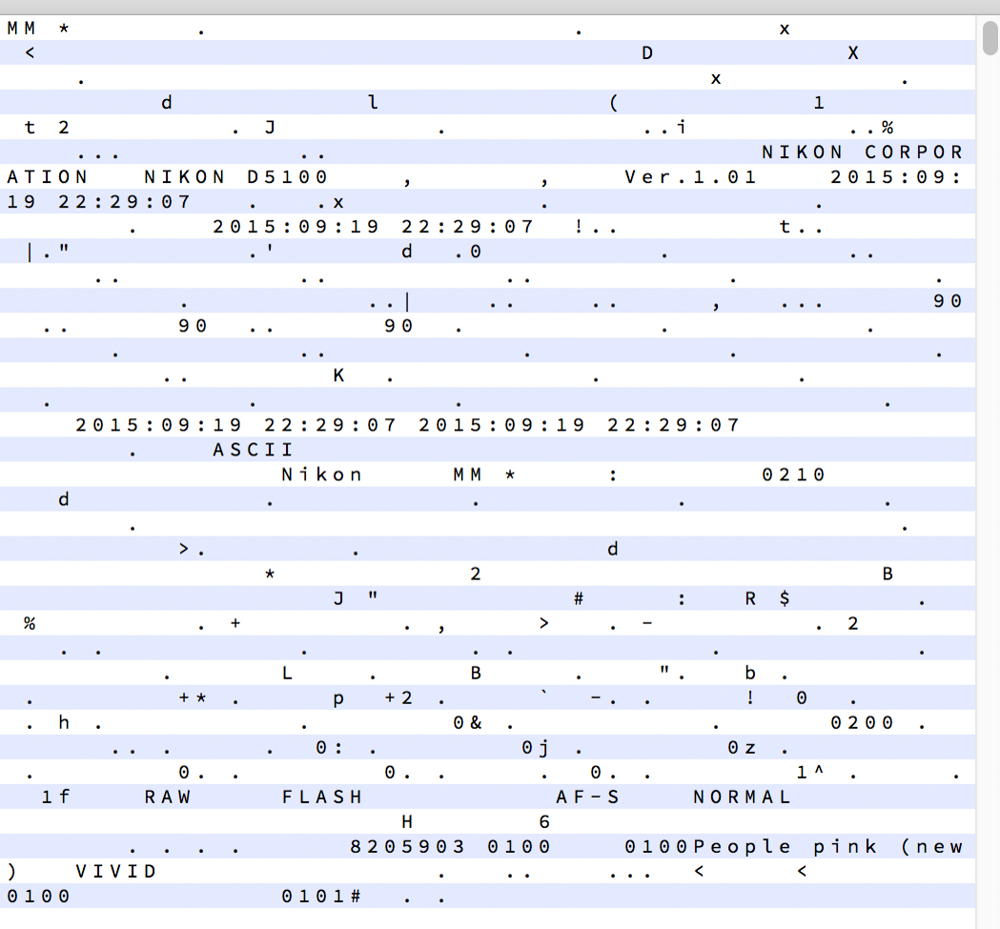

RAW是什麼
RAW儲存的是 光(電子)訊號
JPEG儲存的 色彩資訊
電子訊號要轉換成什麼
是我可以控制的
- 色溫
- 色調
- 飽和度
- 銳利度
最常舉例的狀況：色溫
raw
jpg
RAW的檔案格式
基於TIFF格式
- 標準header(metadata)
- 拍攝資訊(EXIF)
- 電子資訊
- 縮圖
Nikon Electronic Format (NEF)
- 白平衡
- 曝光度
- 色彩轉換
- 動態高光
- 鏡頭資訊
正常來說會是
無損的 12bit or 14-bit data
但在低階機種會故意壓縮
所以就會有人破解
header
read raw
import rawpy
from PIL import Image
raw = rawpy.imread('raw.nef')
print raw.sizes
rgb = raw.postprocess()
img = Image.fromarray(rgb) # Pillow image
img.show() # show on screen